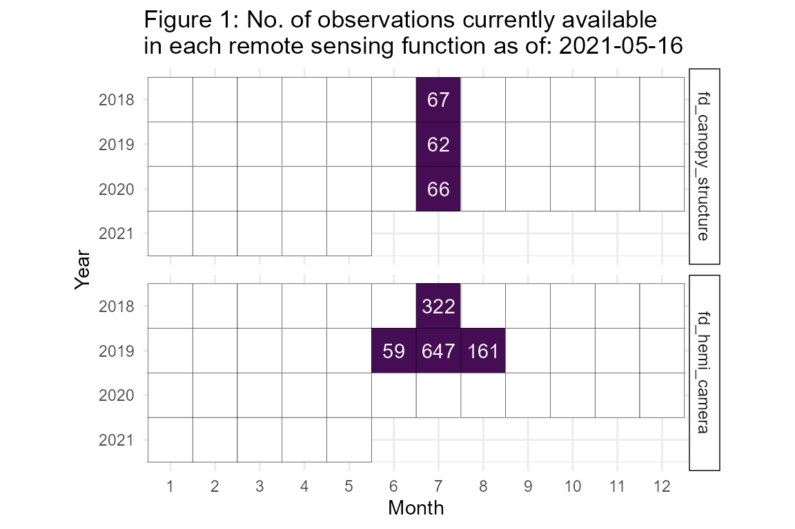
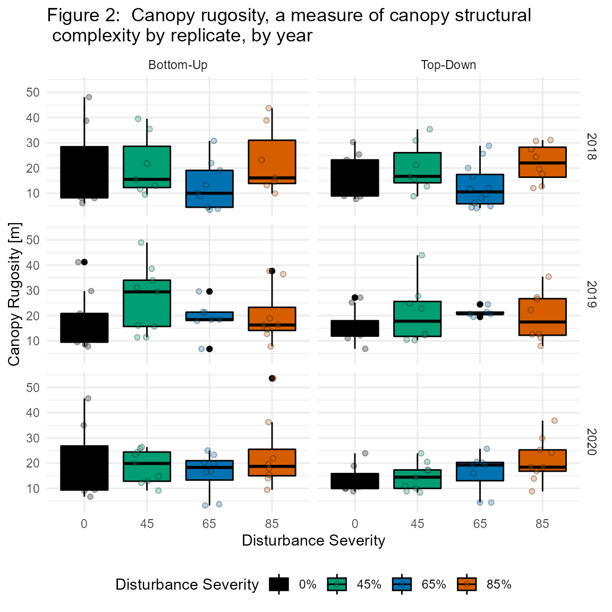
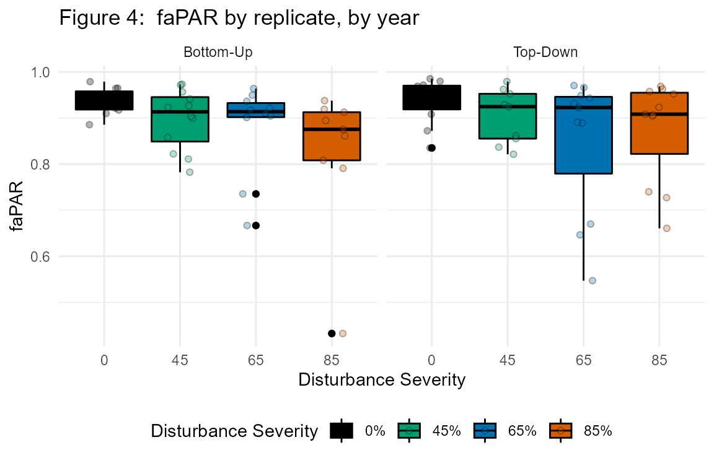

fortedata: Remote Sensing Data
Jeff Atkins
2020-12-14
Source:vignettes/fd_remote_sensing_vignette.Rmd
fd_remote_sensing_vignette.RmdRemote Sensing Background and Introduction
Multiple remote sensing technologies are being employed in FoRTE to collect data with the goal of creating a record of forest canopy structural and spectral change. These data are collected coincident with other data as outlined below (see Remote Sensing Methods). Canopy structure affects ecosystem functioning through altering light transmission/interception, subsequently affecting ecosystem functioning (e.g. productivity and the acquisition/use-efficiency of resources). See [the FoRTE Proposal Narrative] (https://fortexperiment.github.io/fortedata/articles/fd_forte_proposal_vignette.html) for further details.
Below we outline the remote sensing oriented data and functions included in fortedata.
Remote Sensing Functions
The fd_remote_sensing() script within fortedata currently includes the following functions:
fd_hemi_camera()returns a single data set that includes derived estimates of leaf area index, gap fraction, clumping index, and NDVI (normalized difference vegetation index) from terrestrial, upward-facing hemispherical photos looking into the forest canopy taken 1 meter above-ground (Table S9 in ESSD manuscript, Atkins et al. 2020).fd_canopy_structure()returns a single data set that includes 28 structural metrics estimating canopy structural traits such as height, area/density, openness, complexity, and arrangement. Data were processed usingforestrversion 1.0.1 (Atkins et al. 2018) in R Version 3.6.2.fd_ceptometer()returns a single data set that includes estimates of the fraction of photosynthetically available radiation (faPAR) absorbed by the canopy as well as leaf area index (LAI_cept)–each derived from a handheld ceptometer (LP-80; Decagon Devices) (Table S11 in Atkins et al. 2020).
Data Availability
fortedata is an evolving, open-science data package with data updated in near-real time. The current number of remote sensing data observations available as of 2020-12-14 are detailed in Figure 1.
no_of_records.df <- fd_observations()
no_of_records <- subset(no_of_records.df, table == 'fd_canopy_structure' | table == 'fd_hemi_camera')
ggplot2::ggplot(no_of_records, ggplot2::aes(x = as.factor(month), y = as.integer(year), fill= no_of_obs)) +
ggplot2::geom_tile(ggplot2::aes(fill = no_of_obs), color = "black") +
ggplot2::geom_text(ggplot2::aes(label = no_of_obs), color = "white") +
ggplot2::coord_equal()+
ggplot2::scale_fill_gradient(low = "#450d54", high = "#450d54", na.value = 'white')+
ggplot2::scale_y_reverse()+
ggplot2::theme_minimal()+
ggplot2::theme(legend.position = "none")+
ggplot2::ylab("Year")+
ggplot2::xlab("Month")+
ggplot2::ggtitle(paste("Figure 1: No. of observations currently available \nin each remote sensing function as of:", Sys.Date()))+
ggplot2::facet_grid(table ~ ., space = "free")+
ggplot2::theme(strip.text.y = element_text(size = 9), strip.background = element_rect(
color="black", fill="white", size= 0.5, linetype="solid"))
Remote Sensing Methods
Canopy Structural Traits (CSTs) from Terrestrial LiDAR
fd_canopy_structure() contains canopy structural trait metrics (Fahey et al. 2019) derived from 2-D terrestrial lidar data. These data were collected with a user-mounted, portable canopy LiDAR (PCL) system equipped with an upward facing, pulsed‐laser operating at 2000 Hz (Riegl LD90 3100 VHS; Riegl USA Inc., Orlando, Florida, USA). The PCL generates continuous LiDAR returns from a “slice” of the canopy as it is walked along a measured transect. For this study, we used 40 m transects at cardinal directions–north-to-south, east-to-west–through subplot center for a total of 80 m of transect length per subplot. This mirrors the approach of Atkins et al. (2018) and Hardiman et al. (2013) and is sufficient to account for spatial variability of forest structure (Hardiman et al. 2019). A more detailed description of the development and implementation of this terrestrial laser scanning system is available in Parker et al. (2004) and Hardiman et al. ( 2011). We derived canopy structural metrics using the forestr package (Atkins et al. 2018a, b) in R 3.5 (R Core Team, 2018). Data here are provided at the transect level, but should be averaged to make a plot mean.
data.frame(fd_canopy_structure_summary())
## replicate year rugosity rugosity_sd rugosity_n rugosity_se vai_mean
## 1 A 2018 29.608559 10.497869 129 0.9242858 6.796692
## 2 A 2019 29.735343 9.800674 139 0.8312823 5.996452
## 3 A 2020 24.637203 10.579291 135 0.9105204 6.953186
## 4 B 2018 22.436198 5.756363 70 0.6880170 7.232956
## 5 B 2019 23.611997 6.722365 81 0.7469295 6.520808
## 6 B 2020 22.069519 5.521884 86 0.5954400 7.053144
## 7 C 2018 14.014263 5.900967 109 0.5652101 6.695965
## 8 C 2019 14.580620 4.797647 93 0.4974929 5.941412
## 9 C 2020 14.931131 4.167939 105 0.4067492 5.929249
## 10 D 2018 9.080572 4.826094 121 0.4387359 5.832653
## 11 D 2019 10.567458 2.434255 78 0.2756251 5.259916
## 12 D 2020 8.748307 3.864607 91 0.4051209 4.780497
## vai_mean_sd vai_mean_n vai_mean_se
## 1 0.8187640 129 0.07208815
## 2 0.9818119 139 0.08327619
## 3 0.6615754 135 0.05693934
## 4 0.3349234 70 0.04003100
## 5 0.5496304 81 0.06107005
## 6 0.5161193 86 0.05565458
## 7 0.5179845 109 0.04961391
## 8 0.5996817 93 0.06218410
## 9 0.5712212 105 0.05574548
## 10 1.0623365 121 0.09657604
## 11 0.8463590 78 0.09583129
## 12 1.4835040 91 0.15551347
Hemispherical Camera Imagery
Below-canopy, hemispherical images were taken using a 24 Megapixel DSLR camera (Regent Instruments; Quebec, QU, Canda) with a 180° hemispherical lens during peak leaf-out (~July). The camera was facing-upwards, into the canopy and was mounted on a self-leveling tripod with the lens at 1 m from the ground. Leaf area index (LAICAM) was estimated using WinSCANOPY (Regent Instruments). Images were taken at all nested subplots (see fd_experimental_design_vignette).

Sample NDVI image

REU student Evan Paris taking images of the canopy using the NDVI camera
fd_hemi_camera()
## # A tibble: 1,189 x 11
## subplot_id replicate plot subplot nested_subplot date ndvi
## <chr> <chr> <int> <chr> <int> <date> <dbl>
## 1 A01E A 1 E 0 2018-07-23 0.796
## 2 A01E A 1 E 1 2018-07-23 0.827
## 3 A01E A 1 E 3 2018-07-23 0.739
## 4 A01E A 1 E 5 2018-07-23 0.847
## 5 A01E A 1 E 7 2018-07-23 0.822
## 6 A01W A 1 W 0 2018-07-23 0.792
## 7 A01W A 1 W 1 2018-07-23 0.862
## 8 A01W A 1 W 3 2018-07-23 0.861
## 9 A01W A 1 W 5 2018-07-23 0.783
## 10 A01W A 1 W 7 2018-07-23 0.786
## # ... with 1,179 more rows, and 4 more variables: gap_fraction <dbl>,
## # openness <dbl>, lai_cam <dbl>, clumping_index <dbl>Light Interception
Light data–as fpar, the fraction of photosynthetically available radiation absorbed by the canopy–was acquired using a Decagon LP-80 handheld ceptometer (Decagon Devices; Pullman, Washington). fpar is the ratio of PAR above the canopy, to that measured below. fpar is assumed to be the difference between the two values. Below-canopy PAR measurements for each plot were taken along north-south and east-west transects (similar to PCL data above), with measurements taken every 1 to 3 m for a total of 30 - 60 measurements then averaged to make a subplot level mean of below-canopy PAR. Above-canopy PAR measurements were taken in open areas to ensure no interference from the canopy.
fd_ceptometer()
## # A tibble: 48 x 9
## subplot_id replicate plot subplot timestamp a_par b_par fapar
## <chr> <chr> <int> <chr> <dttm> <dbl> <dbl> <dbl>
## 1 D01W D 1 W 2018-07-25 10:45:00 1276. 61.8 0.952
## 2 D03W D 3 W 2018-07-25 10:56:00 1305. 98.3 0.925
## 3 D04W D 4 W 2018-07-25 11:07:00 1305. 345. 0.735
## 4 D02W D 2 W 2018-07-25 11:17:00 1367. 58 0.958
## 5 C04W C 4 W 2018-07-25 11:24:00 1439. 40.6 0.972
## 6 C03W C 3 W 2018-07-25 11:34:00 1383. 43.5 0.969
## 7 C02W C 2 W 2018-07-25 11:45:00 1464. 49.5 0.966
## 8 C01W C 1 W 2018-07-25 11:52:00 1475. 116 0.921
## 9 B04W B 4 W 2018-07-25 13:25:00 1708. 61.7 0.964
## 10 B03E B 3 E 2018-07-25 13:36:00 1768. 110. 0.938
## # ... with 38 more rows, and 1 more variable: lai_cept <dbl>